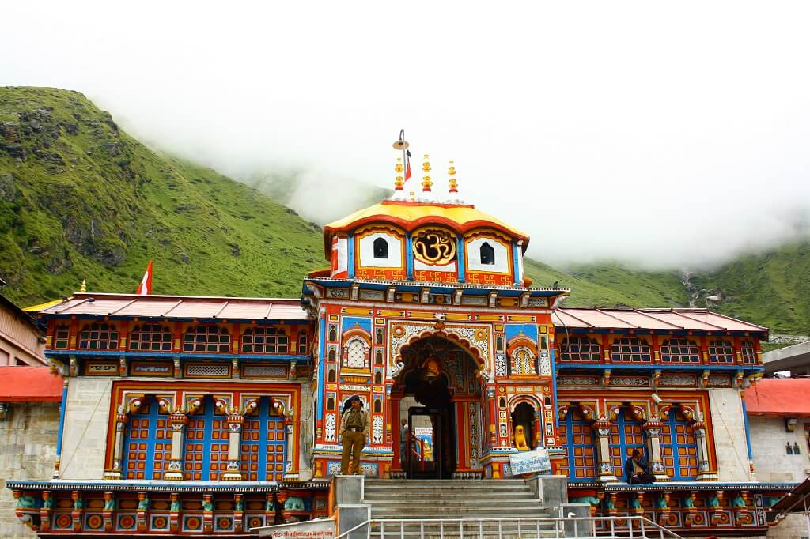
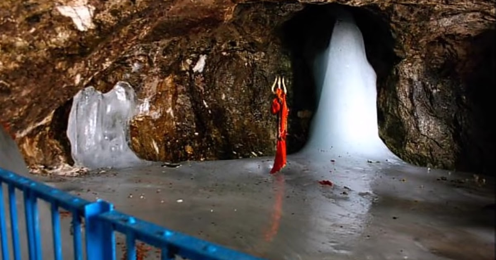
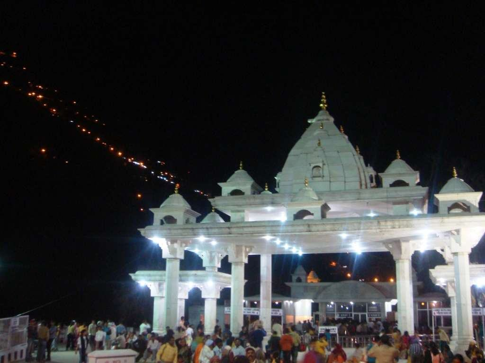
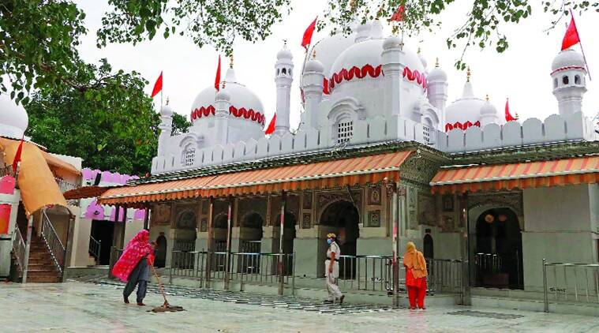

Badarinath Temple
Badrinath or Badrinarayana Temple is a Hindu temple dedicated to Vishnu which is situated in the town of Badrinath in Uttarakhand, India. The temple is also one of the 108 Divya Desams dedicated to Vishnu, who is worshipped as Badrinath—holy shrines for Vaishnavites. People following the Jain religion worship the temple and idol belonging to Rishbhdev (Rishabhanatha) or Adinath, the first Tirthankar of Jainism.[citation needed] It is open for six months every year (between the end of April and the beginning of November), because of extreme weather conditions in the Himalayan region. The temple is located in Garhwal hill tracks in Chamoli district along the banks of Alaknanda River.It is one of the most visited pilgrimage centers of India, having recorded 1,060,000 visits.

Amarnath Cave
Amarnath Temple is a Hindu shrine located in Jammu and Kashmir, India. The cave is situated at an altitude of 3,888 m (12,756 ft),about 141 km (88 mi) from Srinagar, the summer capital of Jammu and Kashmir, reached through Pahalgam town. The shrine represents an important part of Hinduism.The cave, located in Lidder Valley, is surrounded by glaciers, snowy mountains and is covered with snow most of the year, except for a short period of time in summer when it is open to pilgrims. In 1989, pilgrims numbered between 12,000 and 30,000. In 2011, the numbers reached a peak, crossing 6.3 lakh (630,000) pilgrims. In 2018 pilgrims numbered 2.85 lakh (285,000). The annual pilgrimage has varied between 20 and 60 days. The Amarnath cave, abode of the Mahamaya Shakti Peetha, is one of the 51 Shakti Peethas, temples throughout South Asia that commemorate the location of fallen body parts of the Hindu deity Sati.

Vaisnodevi Temple
The second-most visited Hindu pilgrimage destination in India, Mata Vaishno Devi Cave Temple is situated in the Trikuta Hills in Katra, Jammu & Kashmir. Hindu devotees from all over the world visit this famed religious site where the Mother Goddess or Mata Vaishno Devi is said to fulfill their wishes. This religious place is considered the most important Shaktipeeth as it is believed, here the skull of the Goddess Sati fell.
Kedarnath Temple
One of the most revered temple destinations of India, Kedarnath town is nestled in the mighty Garhwal Himalayas. The town, built around the revered Kedarnath temple, is located at an altitude of 3,580 m, near Chorabari glacier, which is the source of the Mandakini river. Dedicated to Lord Shiva, the ancient temple has exquisite architecture and is built of extremely large but evenly shaped grey stone slabs. A conical rock formation inside the temple is worshipped as Lord Shiva in his “Sadashiva” form. The Kedarnath temple, dedicated to Lord Shiva, is a part of Char Dham pilgrimage circuit, and is one of the 12 Jyotirlingas of Lord Shiva in India. Behind the Kedarnath temple, stand the Kedarnath peak, Kedar Dome and other Himalayan peaks.
